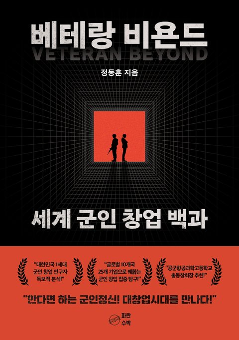

No.001 · 책
베테랑 비욘드
세계 군인 창업 백과
대한민국 1세대 군인 창업 연구자 독보적 분석!
글로벌 10개국 25개 기업으로 꿰뚫는 군인 창업 집중 탐구!
공군항공과학고등학교 총동창회장 추천!
군대는 창업과 가장 거리가 먼 조직처럼 보인다. 명령과 복종, 위계와 규율, 그리고 무엇보다 “실패해서는 안 된다”는 압박으로 이루어진 세계.
그러나 이 책은 정반대를 증명한다. 전장에서 발견한 문제, 군에서 단련된 역량, 생사를 함께한 전우 네트워크가 어떻게 세상을 바꾸는 창업으로 이어졌는가.
『베테랑 비욘드』는 대한민국 1세대 군인 창업 연구자가 글로벌 10개국 25개 기업을 추적해 완성한 ‘세계 군인 창업 백과’다.
창업을 꿈꾸는 이, 군복을 벗고 새 길을 모색하는 예비 창업가, 국방·안보 정책 입안자, 그리고 군인정신의 진짜 쓸모가 궁금한 모든 독자에게 권한다.
오랫동안 군인은 창업과 무관한 집단으로 여겨져 왔다. 이 책은 그 인식에 대한 이의 제기다. — ‘들어서는 말’ 중에서
차례
- Part 1. 프롤로그: 전장(戰場)에서 시장(市場)으로
- Part 2. 기술 최전선으로 진격하는 베테랑들
- Part 3. 향토창업군(鄕土創業軍): 내 고향을 위한 스타트업 전술
- Part 4. 멈추지 않는 미션: 사회적 문제를 해결하는 영웅들
- Part 5. 밀리터리 스탠다드: 일상에 침투한 강력한 표준
- Part 6. 에필로그: 창업군(創業軍)
교보문고에서 보기 →
15,900원